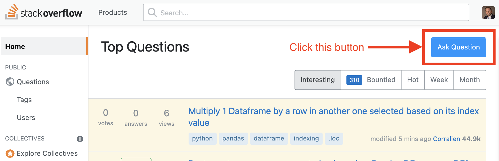
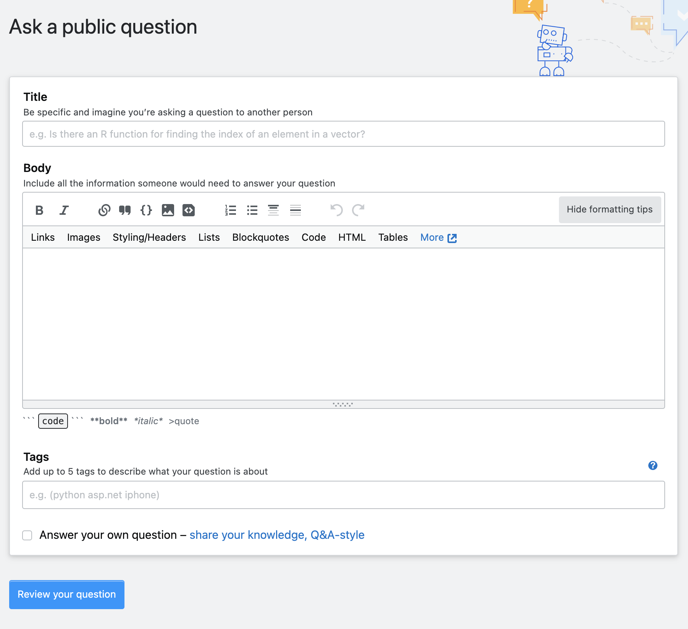
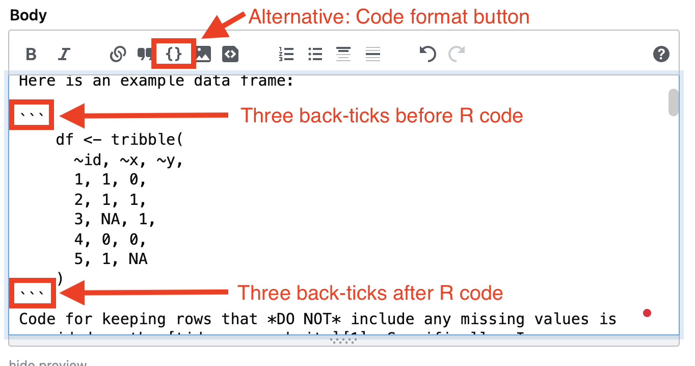
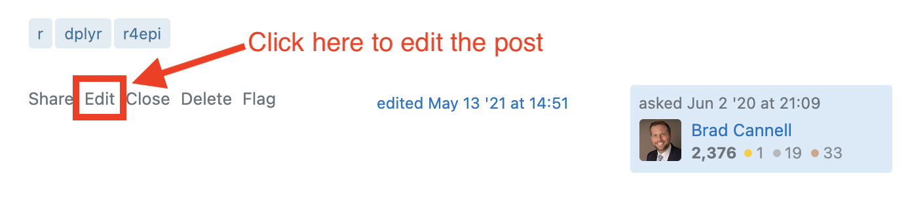

6 Asking Questions
Sooner or later, all of us will inevitably have questions while writing R programs. This is true for novice R users and experienced R veterans alike. Getting useful answers to programming questions can be really complicated under the best conditions (i.e., where someone with experience can physically sit down next to you to interactively work through your code with you). In reality, getting answers to our coding questions is often further complicated by the fact that we don’t have access to an experienced R programmer who can sit down next to us and help us debug our code. Therefore, this chapter will provide us with some guidance for seeking R programming help remotely. We’re not going to lie, this will likely be a frustrating process at times, but we will get through it!
An example
Because we like to start with the end in mind, click here for an example of a real post that we created on Stack Overflow. We will refer back to this post below.
6.1 When should we seek help?
Imagine yourself sitting in front of your computer on a Wednesday afternoon. You are working on a project that requires the analysis of some data. You know that you need to clean up your data a little bit before you can do your analysis. For example, maybe you need to drop all the rows from your data that have a missing value for a set of variables. Before you drop them, you want to take a look at which rows meet this criterion and what information would potentially be lost in the process of dropping those rows. In other words, you just want to view the rows of your data that have a missing value for any variable. Sounds simple enough! However, you start typing out the code to make this happen and that’s when you start to run into problems. At this point, the problem you encounter will typically come in one of a few different flavors.
As you sit down to write the code, you realize that you don’t really even know where to start.
You happily start typing out the code that you believe should work, but when you run the code you get an [error][errors] message.
You happily start typing out the code that you believe should work, but when you run the code you don’t get the result you were expecting.
You happily start typing out the code that you believe should work and it does! However, you notice that your solution seems clunky, inefficient, or otherwise less than ideal.
In any of these cases, you will need to figure out what your next step will be. We believe that there is typically a lot of value in starting out by attempting to solve the problem on your own without directly asking others for help. Doing so will often lead you to a deeper understanding of the solution than you would obtain by simply being given the answer. Further, finding the solution on your own helps you develop problem-solving skills that will be useful for the next coding problem you encounter – even if the details of that problem are completely different than the details of your current problem. Having said that, finding a solution on your own does not mean attempting to do so in a vacuum without the use of any resources (e.g., textbooks, existing code, or the internet). By all means, use available resources (we suggest some good ones below)!
On the other hand, we – the authors – have found ourselves stubbornly hacking away on our own solution to a coding problem long after doing so ceased being productive on many occasions. We don’t recommend doing this either. We hope that the guidance in this chapter will provide you with some tools for effectively and efficiently seeking help from the broader R programming community once you’ve made a sincere effort to solve the problem on your own.
But, how long should you attempt to solve the problem on your own before reaching out for help? As far as we know, there are no hard-and-fast rules about how long you should wait before seeking help with coding problems from others. In reality, the ideal amount of time to wait is probably dependent on a host of factors including the nature of the problem, your level of experience, project deadlines, all of your little personal idiosyncrasies, and a whole host of other factors. Therefore, the best guidance we can provide is pretty vague. In general, it isn’t ideal to reach out to the R programming community for help as soon as you encounter a problem, nor is it typically ideal to spend many hours attempting to solve a coding problem that could be solved in few minutes if you were to post a well-written question on Stack Overflow or the RStudio Community (more on these below).
6.2 Where should we seek help?
Where should you turn once you’ve determined that it is time to seek help for your coding problem? We suggest that you simply start with Google. Very often, a quick Google search will give you the results you need to help you solve your problem. However, Google search results won’t always have the answer you are looking for.
If you’ve done a Google search and you still can’t figure out how to solve your coding problem, we recommend posting a question on one of the following two websites:
Stack Overflow (https://stackoverflow.com/). This is a great website where programmers who use many different languages help each other solve programming problems. This website is free, but you will need to create an account.
RStudio Community (https://community.rstudio.com/). Another great discussion-board-type website from the people who created a lot of the software we will use in this book. This website is also free, but also requires you to create an account.
🗒Side Note: Please remember to cross-link your posts if you happen to create them on both Stack Overflow and RStudio Community. When we say “cross-link” we mean that you should add a hyperlink to your RStudio Community post on your Stack Overflow post and a link to your Stack Overflow post on your RStudio Community post.
Next, let’s learn how to make a post.
6.3 How should we seek help?
At this point, you’ve run into a problem, you’ve spent a little time trying to work out a solution in your head, you’ve searched Google for a solution to the problem, and you’ve still come up short. So, you decide to ask the R programming community for some help using Stack Overflow. But, how do you do that?
🗒Side Note: We’ve decided to show you haw to create a post on Stack Overflow in this section, but the process for creating a post in the RStudio Community is very similar. Further, an RStudio Community tutorial is available here: https://community.rstudio.com/t/example-question-answer-topic-thread/70762.
6.3.1 Creating a post on Stack Overflow
The first thing you need to do is navigate to the Stack Overflow website. The homepage will look something like the screenshot below.
Next, you will click the blue “Ask Question” button. Doing so will take you to a screen like the following.

As you can see, you need to give your post a title, you need to post the actual question in the body section of the form, and then you can (and should) tag your post. “A tag is simply a word or a phrase that describes the topic of the question.”1 For our R-related questions we will want to use the “r” tag. Other examples of tags you may use often if you continue your R programming journey may include “dplyr” and “ggplot2”. When you have completed the form, you simply click the blue “Review your question” button towards the bottom-left corner of the screen.
6.3.1.1 Inserting R code
To insert R code into your post (i.e., in the body), you will need to create code blocks. Then, you will type your R code inside of the code blocks. You can create code blocks using back-ticks ( ` ). The back-tick key is the upper-left key of most keyboards – right below the escape key. On our keyboard, the back-tick and the tilde ( ~ ) share the same key. We will learn more about code blocks in the chapter on using [Quarto/]. For now, let’s just take a look at an example of creating a code block in the screenshot below. This screenshot comes from the example Stack Overflow post introduced at the beginning of the chapter.

As you can see, we placed three back-ticks on their own line before our R code and three back-ticks on their own line after our R code. Alternatively, we could have used our mouse to highlight our R code and then clicked the code format button, which is highlighted in the screenshot above and looks like an empty pair of curly braces ( {} ).
6.3.1.2 Reviewing the post
After you create your post and click the “Review your question” button, you will have an opportunity to check your post for a couple of potential issues.
Duplicates. You want to try your best to make sure your question isn’t a duplicate question. Meaning, you want to make sure that someone else hasn’t already asked the same question or a question that is very similar. As you are typing your post title, Stack Overflow will show you a list of potentially similar questions. It will show you that list again as you are reviewing your post. You should take a moment to look through that list and make sure you question isn’t going to be a duplicate. If it does end up being a duplicate, Stack Overflow moderators may tag it as such and close it.
Typos and errors. Of course, you also want to check your post for standard typos, grammatical errors, and coding errors. However, you can always edit your post later if an error does slip through. You just need to click the
edittext at the bottom of your post. A screenshot from the example post is shown in the screenshot below.

6.3.2 Creating better posts and asking better questions
There are no bad R programming questions, but there are definitely ways to ask those questions that will be better received than others. And better received questions will typically result in faster responses and more useful answers. It’s important that you ask your questions in a way that will allow the reader to understand what you are trying to accomplish, what you’ve already tried, and what results you are getting. Further, unless it’s something extremely straight forward, you should always provide a little chunk of data that recreates the problem you are experiencing. These are known as reproducible examples This is so important that there is an R package that does nothing but help you create reproducible examples – Reprex.
Additionally, Stack Overflow and the RStudio community both publish guidelines for posting good questions.
Stack Overflow guide to asking questions: https://stackoverflow.com/help/how-to-ask
RStudio Community Tips for writing R-related questions: https://community.rstudio.com/t/faq-tips-for-writing-r-related-questions/6824
You should definitely pause here an take a few minutes to read through these guidelines. If not now, come back and read them before you post your first question on either website. Below, we show you a few example posts and highlight some of the most important characteristics of quality posts.
6.3.2.1 Example posts
Here are a few examples of highly viewed posts on Stack Overflow and the RStudio community. Feel free to look them over. Notice what was good about these posts and what could have been better. The specifics of these questions are totally irrelevant. Instead, look for the elements that make posts easy to understand and respond to.
6.3.2.2 Question title
When creating your posts, you want to make sure they have succinct, yet descriptive, titles. Stack overflow suggests that you pretend you are talking to a busy colleague and have to summarize your issue in a single sentence.2 The RStudio Community tips for writing questions further suggests that you be specific and use keywords.3 Finally, if you are really struggling, it may be helpful to write your title last.2 In our opinion, the titles from the first 3 examples above are pretty good. The fourth has some room for improvement.
6.3.2.3 Explanation of the issue
Make sure your posts have a brief, yet clear, explanation of what you are trying to accomplish. For example, “Sometimes I want to view all rows in a data frame that will be dropped if I drop all rows that have a missing value for any variable. In this case, I’m specifically interested in how to do this with dplyr 1.0’s across() function used inside of the filter() verb.”
In addition, you may want to add what you’ve already tried, what result you are getting, and what result you are expecting. This information can help others better understand your problem and understand if the solution they offer you does what you are actually trying to do.
Finally, if you’ve already come across other posts or resources that were similar to the problem you are having, but not quite similar enough for you to solve your problem, it can be helpful to provide links to those as well. The author of example 3 above (i.e., How should I deal with “package ‘xxx’ is not available (for R version x.y.z)” warning?) does a very thorough job of linking to other posts.
6.3.2.4 Reproducible example
Make sure your question/post includes a small, reproducible data set that helps others recreate your problem. This is so important, and so often overlooked by students in our courses. Notice that we did NOT say to post the actual data you are working on for your project. Typically, the actual data sets that we work with will have many more rows and columns than are needed to recreate the problem. All of this extra data just makes the problem harder to clearly see. And more importantly, the real data we often work with contains protected health information (PHI) that should NEVER be openly published on the internet.
Here is an example of a small, reproducible data set that we created for the example Stack Overflow post introduced at the beginning of the chapter. It only has 5 data rows and 3 columns, but any solution that solves the problem for this small data set will likely solve the problem in our actual data set as well.
# Load the dplyr package.
library(dplyr)
# Simulate a small, reproducible example of the problem.
df <- tribble(
~id, ~x, ~y,
1, 1, 0,
2, 1, 1,
3, NA, 1,
4, 0, 0,
5, 1, NA
)Sometimes you can add reproducible data to your post without simulating your own data. When you download R, it comes with some built in data sets that all other R users have access to as well. You can see an full list of those data sets by typing the following command in your R console:
data()There are two data sets in particular, mtcars and iris, that seemed to be used often in programming examples and question posts. You can add those data sets to your global environment and start experimenting with them using the following code.
# Add the mtcars data frame your global environment
data(mtcars)
# Add the iris data frame to your global environment
data(iris)In general, you are safe to post a question on Stack Overflow or the RStudio Community using either of these data frames in your example code – assuming you are able to recreate the issue you are trying to solve using these data frames.
6.4 Helping others
Eventually, you may get to a point where you are able to help others with their R coding issues. In fact, spending a little time each day looking through posts and seeing if you can provide answers (whether you officially post them or not) is one way to improve your R coding skills. For some of us, this is even a fun way to pass time! 🤓
In the same way that there ways to improve the quality and usefulness of your question posts, there are also ways to improve the quality and usefulness of your replies to question posts. Stack Overflow also provides a guide for writing quality answers, which is available here: https://stackoverflow.com/help/how-to-answer. In our opinion, the most important part is to be patient, kind, and respond with a genuine desire to be helpful.
6.5 Summary
In this chapter we discussed when and how to ask for help with R coding problems that will inevitably occur. In short,
Try solving the problem on your own first, but don’t spend an entire day beating your head against the wall.
Start with Google.
If you can’t find a solution on Google, create a post on Stack Overflow or the RStudio Community.
Use best practices to create a high quality posts on Stack Overflow or the RStudio Community. Specifically:
Write succinct, yet descriptive, titles.
Write a a brief, yet clear, explanation of what you are trying to accomplish. Add what you’ve already tried, what result you are getting, and what result you are expecting.
Try to always include a reproducable example of the problem you are encountering in the form of data.
Be patient, kind, and genuine when posting or responding to posts.